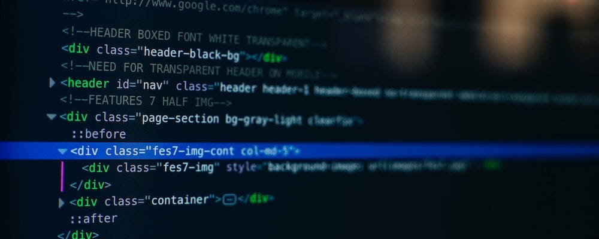
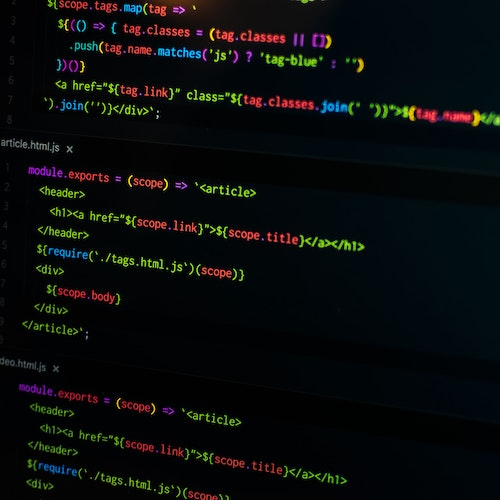

All modern websites and web applications are built using three fundamental technologies: HTML, CSS and JavaScript. These are the languages of the web
In this post, let's focus on HTML. We will learn what HTML is all about, and why you too should learn it.
What is HTML
HTML stands for HyperText Markup Language. It's a markup language that web developers use to structure and describe the content of a webpage (not a programming language).
HTML consists of elements that describe different types of content: paragraphs, links, headings, images, video, etc. Web browsers understand HTML and render HTML code as websites.
In HTML, each element is made up of 3 parts:
- The opening tag
- The closing tag
- The actual element
You can learn more at the MDN Web Docs
Why Learn HTML
There are countless reasons for learning the fundamental language of the web. Here are 5 of them:
- To be able to use the fundamental web dev language
- To hand-craft beautiful websites instead of relying on tools like Worpress or Wix
- To build web applications
- To impress friends
- To have fun 😃
Hopefully you learned something new here. See you next time!
RELATED POSTS
-
How to Learn Web Development
by jonas schmedumann
-
The Unknowing Powers of CSS
by jim dilton
-

Why JavaScript is Awesomeby matilda